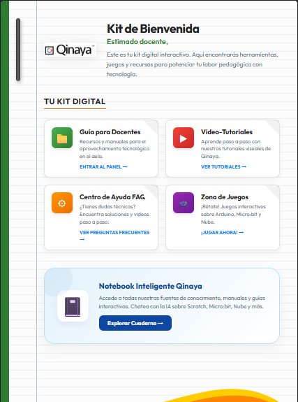
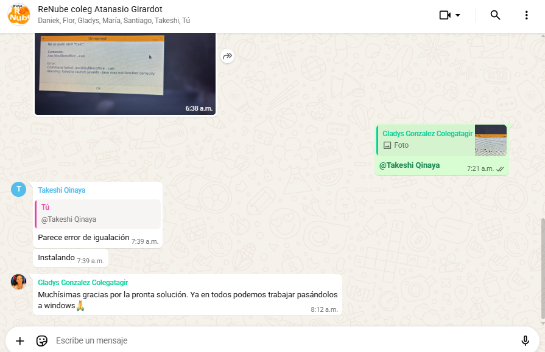
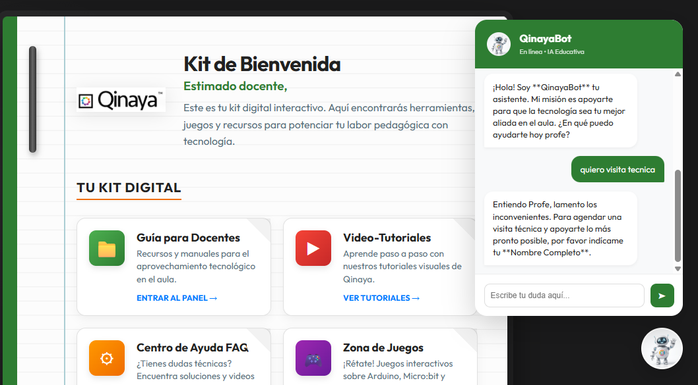

Transformación digital de laboratorios escolares: de la obsolescencia a la productividad, autonomía y apropiación pedagógica en Bogotá
En cuatro meses de despliegue continuo en la capital, el Proyecto Renube Qinaya ha revitalizado la infraestructura tecnológica de la Secretaría de Educación del Distrito (SED), alcanzando a 33 instituciones educativas oficiales distribuidas en 14 localidades de Bogotá (Bosa, Suba, Ciudad Bolívar, San Cristóbal, Usme, Engativá, Teusaquillo, Santa Fe, Rafael Uribe Uribe, Fontibón, Tunjuelito, Kennedy, Puente Aranda y Sumapaz).
La solución ha logrado transformar 799 computadores que se encontraban en obsolescencia tecnológica extrema en laboratorios escolares de alto rendimiento, beneficiando directamente a miles de estudiantes en ambas jornadas escolares (mañana y tarde). Con más de 92,200 horas de uso real acumulado y más de 86 docentes capacitados académicamente en la apropiación del ecosistema, el proyecto demuestra cómo la equidad digital y la eficiencia técnica recuperan la utilidad pedagógica de los salones de cómputo en Bogotá.
Respaldo de Impacto Pedagógico: En los marcos internacionales de transformación digital en educación pública (UNESCO y Banco Interamericano de Desarrollo - BID), el indicador definitivo de equidad digital no reside únicamente en la adquisición de hardware nuevo, sino en la tasa de aprovechamiento efectivo en el aula y la velocidad de apropiación del cuerpo docente. El Proyecto Renube Qinaya evidencia cómo la repotenciación eficiente y el acompañamiento in situ convierten computadores anteriormente inoperativos en verdaderos motores de desarrollo de competencias STEM para la ciudad.
La Historia de Transformación: De la Obsolescencia al Trabajo Activo
Cuatro meses reactivando salas de computo y empoderando a estudiantes y docentes
La realidad educativa de muchos colegios oficiales de Bogotá presentaba un desafío apremiante: salas de sistemas equipadas con computadores antiguos ralentizados e incapacitados para ejecutar programas modernos. Para los docentes, dictar una clase de tecnología significaba perder más de la mitad del tiempo esperando a que los equipos encendieran o ejecutaran una sola instrucción.
La llegada del Proyecto Renube Qinaya transformó radicalmente este panorama. A través de la solución Qinaya, se logró recuperar la utilidad práctica de 799 computadores distribuidos en 33 instituciones educativas de la ciudad. Los salones de informática no solo volvieron a abrir sus puertas, sino que se convirtieron en laboratorios escolares altamente productivos donde estudiantes de primaria y bachillerato hoy programan, crean diagramas, diseñan en 3D, exploran la robótica e investigan con herramientas de Inteligencia Artificial en tiempo real.
A lo largo de 4 meses ininterrumpidos de operación escolar, los 33 colegios intervenidos han mantenido la solución instalada al 100%, sin registrar una sola desinstalación. Esto evidencia la alta valoración pedagógica por parte de los rectores y cuerpos docentes.
El tiempo de respuesta de los equipos cambió drásticamente, permitiendo que las clases de 45 a 60 minutos se aprovechen al máximo en actividades académicas efectivas, erradicando la frustración estudiantil.
Desafíos en Terreno y Resiliencia Operativa
Compromiso técnico en campo ante la realidad física de los colegios de Bogotá
El despliegue de tecnología en el sector público requiere un compromiso humano y técnico excepcional. Los equipos de instalación de Qinaya han recorrido las localidades de Bogotá enfrentando y superando diversas barreras estructurales en cada visita técnica:
El equipo técnico de Qinaya logró reuniones con OTIC para la estabilización de estas redes de acceso a internet en los colegios, donde en los colegios que se instaló se logró en algunos casos una estabilidad mínima que se requería para la solución, pero seguimos teniendo algunas dificultades en algunos colegios con la estabilidad de la red.
Ante esto, los instaladores agotaron todas las opciones viables de recuperación de software en algunos equipos y en los que no fue posible, el colegio tramitó su baja definitiva.
En algunas visitas se encontró que la obsolescencia ya había sido resuelta internamente por el colegio con computadores nuevos. Los técnicos reportaron con transparencia para evitar duplicidad de recursos y reorientar el esfuerzo hacia sedes necesitadas.
Compromiso con la Meta: Para acelerar el cumplimiento de la meta de los 1,000 equipos repotenciados, reiteramos nuestro compromiso de asistir a cada colegio agendado desde Ágatha, e invitamos a fortalecer la focalización con data de colegios actualizada ya que necesitamos de más colegios para poder llegar a la meta lo antes posible.
Nuestro Soporte Técnico Asertivo
Acompañamiento continuo, capacitación oportuna y resolución en tiempo real
Uno de los pilares del éxito del proyecto radica en que la instalación del software es solo el comienzo. Qinaya ha consolidado un modelo de Soporte Técnico Asertivo que acompaña de manera activa y permanente a los docentes durante ambas jornadas escolares (mañana y tarde).
33 Mesas de Ayuda Directas
Cada uno de los 33 colegios cuenta con un grupo exclusivo de WhatsApp coordinado por ingenieros de Qinaya. Las inquietudes técnicas de los docentes reciben respuesta y solución inmediata durante la misma hora de clase.
Bot con IA para Visitas Técnicas
Implementamos un asistente virtual con Inteligencia Artificial que procesa solicitudes complejas de soporte y agenda automáticamente visitas presenciales de ingenieros en campo cuando se requiere mantenimiento físico.
86+ Docentes Capacitados
Inmediatamente después de cada instalación, se realizan capacitaciones presenciales y virtuales donde los profesores aprenden a dominar la plataforma, solicitar aplicaciones y guiar sus clases con total confianza.
Kit de Bienvenida Pedagógico
Entregamos a los docentes manuales de uso, guías de herramientas para el aula (Tinkercad, Scratch, IA en la educación) y video tutoriales que orientan el trabajo con los estudiantes paso a paso.



Uso del Computador y Formación Académica
Fomento de habilidades STEM, pensamiento computacional, ofimática e inteligencia artificial
La solución Qinaya va más allá de encender un equipo; transforma el computador en un verdadero laboratorio de aprendizaje práctico. A través de la solución instalada, los estudiantes desarrollan competencias avanzadas en múltiples áreas académicas:
Programación y Lógica
Formación en programación y pensamiento computacional para estudiantes de primaria y bachillerato mediante Scratch, MakeCode y Python.
Ofimática y Producción de Textos
Manejo de herramientas de LibreOffice (Writer, Calc, Impress) para la elaboración de documentos, hojas de cálculo y presentaciones académicas con excelente apropiación.
Diagramas de Flujo y Procesos
Creación de diagramas de flujo con DFD e Inkscape para estructuración de algoritmos y diseño de esquemas de resolución de problemas.
Tarjetas Electrónicas y Videojuegos
Integración de tarjetas electrónicas con Arduino y Micro:bit para la enseñanza de robótica, sensores y programación de videojuegos interactivos.
Diseño 2D / 3D
Modelado tridimensional en Tinkercad 3D para proyectar figuras geométricas y prototipos de ingeniería escolar.
Investigación e IA Educativa
Consulta investigativa en Wikipedia y Colombia Aprende, gestión escolar en Google Classroom y correos institucionales, e innovación con ChatGPT.
Colegios con Horas de Uso Más Relevantes en el Rango Actual
(Muestreo representativo de colegios destacados en intensidad de uso, tomado del rango de operación más cercano a la fecha del informe)
| Institución Educativa (IED) | PCs Instalados | Promedio Horas / Día | Programa Principal de Aula | Total Horas Acumuladas |
|---|
Casos de Éxito Emblemáticos
Evidencia directa y declaraciones de los docentes en las salas de computo
Instituciones como el Colegio Estrella del Sur, Colegio Moralba Suroriental, Colegio La Joya, Colegio Manuela Beltrán y Colegio Atanasio Girardot representan modelos ejemplares de apropiación. En estos planteles, los profesores encontraron en la solución Qinaya la respuesta definitiva a los problemas de obsolescencia que ralentizaban el aprendizaje.
Colegio Manuela Beltrán (IED)
Teusaquillo • 21 PCs Repotenciados
"Antes la clase se nos iba intentando encender los computadores o esperando a que cargara una aplicación. El docente Iván Flores manifiesta que con la solución Qinaya la velocidad cambió totalmente: los estudiantes ingresan de inmediato a Scratch, Python y sus guías de trabajo sin perder tiempo de clase."
"El docente destaca que los computadores que antes estaban archivados por obsolescencia ahora permiten trabajar programas de programación y guías de ofimática durante toda la jornada sin interrupciones."
"El profesor manifiesta una alta valoración al acompañamiento constante por parte del equipo de ingenieros y la efectividad en la atención de requerimientos a través del grupo de WhatsApp."
Colegio Atanasio Girardot (SEDE A)
Santa Fe • 24 PCs Repotenciados
"Teníamos equipos que dábamos prácticamente por perdidos. La docente Gladys González manifiesta que tras la instalación de la solución Qinaya, la sala de sistemas se recuperó por completo y los niños trabajan activamente en diseño 3D con Tinkercad y programación sin bloqueo de equipos."
"La docente expresa que la motivación de los estudiantes se renovó al ver que los programas responden con fluidez, permitiéndoles desarrollar sus guías pedagógicas y proyectos de robótica con total entusiasmo."